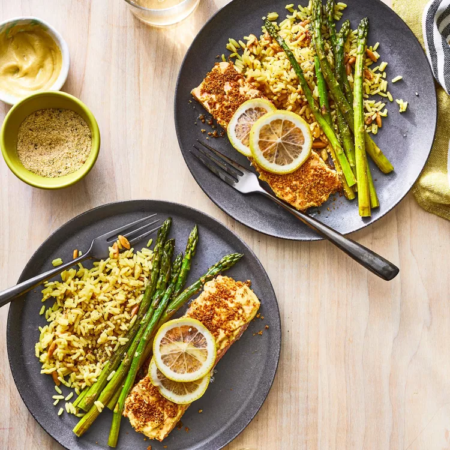
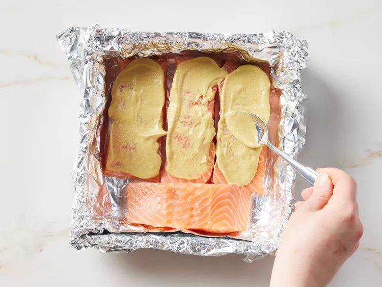
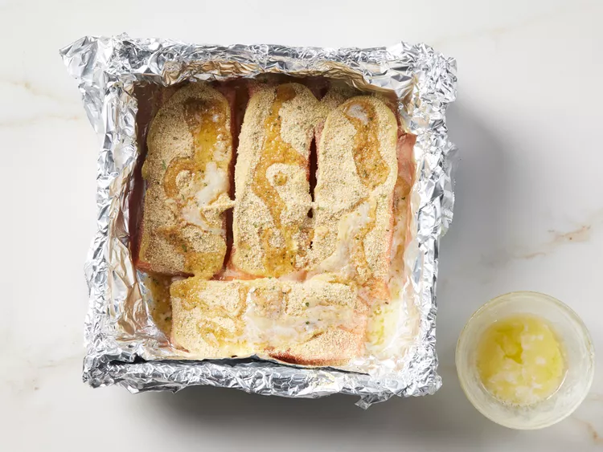
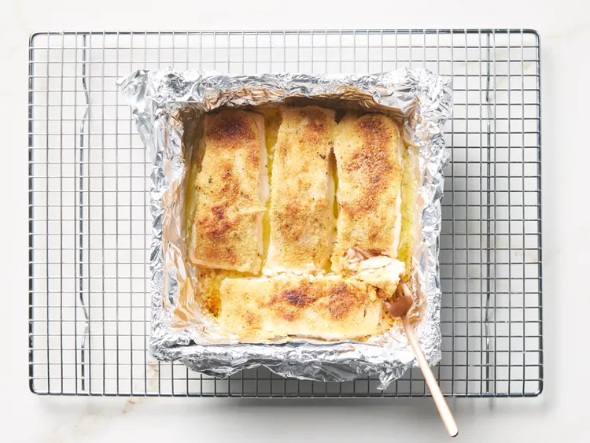

Home
Baked Salmon Fillets Dijon

Description
Learn how long to bake salmon at 400 degrees Fº (200 degrees Cº) with this
easy recipe for delicious salmon fillets coated with Dijon-style mustard
and seasoned bread crumbs drizzled with butter.
Why You'll Love This Recipe
This recipe it's easy, simple and delicious.
Ingredients
- 4 (4 ounce) fillets salmon
- 1 pound shrimp, peeled and deveined
- 3 tablespoons prepared Dijon-style mustard
- Salt and ground black pepper to taste
- ¼ cup Italian-style dry bread crumbs
- ¼ cup butter, melted
Steps
-
Gather all ingredients. Preheat the oven to 400 degrees Fº (200 degrees
Cº). Line a shallow baking pan with aluminum foil.

-
Place salmon fillets skin-side down on the prepared baking pan. Spread a
thin layer of mustard on top of each fillet; season with salt and
pepper.

- Top with bread crumbs, then drizzle with melted butter.

-
Bake in the preheated oven until salmon flakes easily with a fork, about
15 minutes.

- Serve and enjoy!
All rights reserved to
All Recipes.